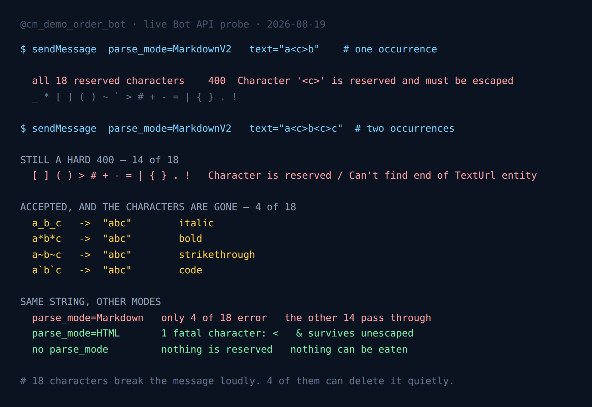

Four Telegram Characters Do Not Break Your Message. They Delete It.
The Bot API documentation has one sentence about MarkdownV2 that every bot developer has read and nobody has tested: eighteen characters "must be escaped with the preceding character \". It lists them, it moves on, and it treats all eighteen as the same kind of problem.
They are not the same kind of problem. I sent 126 live sendMessage calls at the API to find out where the differences are, and the split that came back is the one that actually decides whether a bug reaches your users:
- Fourteen of the eighteen fail with a 400. Loud, logged, impossible to miss.
- Four of them are accepted when the string contains two of the same character, and both characters are silently removed from the message that gets delivered.
A 400 is a bad afternoon. A message that sends successfully with pieces missing is a bug that survives your tests, your staging bot and your logs, and shows up as a support ticket six weeks later about a user whose name renders wrong.

The setup, and why it needed almost no chat
Two days ago, while measuring inline keyboard limits, I found that the Bot API answers structural errors before it checks whether your chat exists. That turned out to apply to parse errors too, and it makes this kind of probing much cheaper than it sounds.
$ sendMessage chat_id=1 parse_mode=MarkdownV2 text="a.b"
Bad Request: can't parse entities: Character '.' is reserved
and must be escaped with the preceding character '\'
$ sendMessage chat_id=1 parse_mode=MarkdownV2 text="a\.b"
Bad Request: chat not found
$ sendMessage chat_id=1 text="a.b"
Bad Request: chat not foundChat 1 does not exist. Telegram parses the text first anyway, and only reaches for the chat once the markup is valid. So the second and third lines, both "chat not found", are the control: they prove the request got past the parser. Any string you want to check for parse validity can be checked with a bot token and no conversation at all.
The part I did need a real chat for is the interesting part. When a message is accepted, the API response contains the message object, and result.text holds the visible text with all formatting stripped out. Comparing that string to the string I meant to send is what exposes the silent cases. I used my own account as the target and deleted every accepted message immediately after reading it back.
One occurrence: the docs are exactly right
First pass, one character at a time, in the middle of otherwise boring text: a_b, a*b, a.b, and so on through all eighteen.
All eighteen returned a 400. No exceptions, no partial credit. If you have been carrying a vague suspicion that half of that list is defensive over-documentation, drop it: _ * [ ] ( ) ~ ` > # + - = | { } . ! is a complete and accurate list of what breaks a MarkdownV2 message on its own.
Most of them come back with the same generic line, naming the character. Two do not, and the difference is a small gift when you are debugging:
a]b Character ']' is reserved and must be escaped with the preceding character '\'
a[b Can't find end of TextUrl entity at byte offset 1An opening bracket does not report itself as reserved, because to the parser it is not junk. It is the start of a link that never got finished. The error names the entity it was building and gives you the byte offset where it started. That is the fastest debugging signal in the whole format, and it only appears for characters that open something.
Two occurrences: fourteen still fail, four disappear
The single-character test is the test everyone runs, and it is the test that hides the problem. Real strings do not contain one underscore. Usernames, filenames, package versions and search queries contain two, three, five.
Second pass, same eighteen characters, this time paired: a_b_c, a*b*c, a.b.c, and so on.
| Characters | Paired and unescaped | What arrives |
|---|---|---|
[ ] ( ) > # + - = | { } . ! | 400 Bad Request | nothing — the send fails |
_ | accepted | abc — italic, underscores gone |
* | accepted | abc — bold, asterisks gone |
~ | accepted | abc — strikethrough, tildes gone |
` | accepted | abc — code, backticks gone |
The four are not a random subset. They are precisely the delimiters that have a closing form: italic, bold, strikethrough and inline code all open and close with the same character. Two of them in a row is not a mistake to the parser, it is a complete, well-formed entity. The API has nothing to complain about, so it does not complain — it does what the markup says, consumes both delimiters, and delivers the remainder.
Everything else on the list is either structural (brackets and parentheses build links, and an unfinished link is an error) or purely reserved, a character with no entity behind it at all, which can only ever be a mistake, which is why the parser can reject it with confidence.
So the rule underneath the docs' flat list is this: a reserved character that can close itself will be obeyed rather than reported.
Where this actually bites
Nowhere in your own copy. You control your own strings, and you notice a missing asterisk in a template on the first run.
It bites at the join between your template and somebody else's data. A few real shapes:
anna_marie_k, a Telegram username with two underscores. Delivered asannamariekin italics. Now your bot has told a user their handle wrong, and if it also stored what it displayed, wrong in your database.report_2026_final.pdf— a filename echoed back in a confirmation. Two underscores, both eaten.**important**— a user who pasted Markdown into your bot. Renders bold, both pairs gone.- Search results, product titles, error strings pulled from another service — anything you did not write yourself.
The failure mode is asymmetric in the worst direction. The fourteen loud characters are far more common in ordinary text than the four quiet ones (a full stop appears in almost every sentence), so the loud ones are what you hit first in development. You will fix it, conclude that unescaped text throws errors, and ship. The quiet four are rare enough to survive to production and common enough to get there eventually.
The migration trap: legacy Markdown to MarkdownV2
I ran the same eighteen characters through the deprecated Markdown parse mode for comparison, and the gap is bigger than "V2 is stricter" suggests.
Legacy Markdown rejected exactly four: _, *, [ and `. The other fourteen, including the full stop, the hyphen, the exclamation mark and the plus sign, passed straight through and rendered literally.
That is what makes the upgrade nastier than a version bump. Code that ran clean for years on legacy Markdown has fourteen new fatal characters the moment you change the string Markdown to MarkdownV2, and they are the ordinary ones. The first message with a date in it starts failing. Telegram's own formatting options reference flags V1 as deprecated, but the practical cost of moving is not in the docs: it is a bulk audit of every string you have ever passed to sendMessage.
Inside code spans and links, the rules genuinely are narrower
The docs claim that inside code and pre blocks only the backtick and the backslash need escaping, and that inside a link's (...) only the closing parenthesis and the backslash do. Both claims held on every character I tested:
- Code span and pre block. Seventeen of the eighteen were accepted and rendered verbatim. Only the backtick failed, which it must, since it terminates the span.
- Link URL. Seventeen accepted, only
)failed. Full stops and hyphens inside a URL need nothing, which is a relief given what URLs look like.
One thing the docs mention that is worth seeing rather than reading: the backslash inside a code span is consumed, not displayed. `a\b` arrives as ab. If you are formatting Windows paths or regular expressions inside code spans, that is the fifth character on the silent list.
A smaller detail, offered because it contradicted my own guess: a lone trailing backslash, ab\, is not treated as an incomplete escape sequence. It is accepted and rendered literally as ab\. I had assumed an error, wrote the assumption into the test as the expected value, and the run told me I was wrong.
HTML mode has one fatal character instead of eighteen
Telegram supports three parse modes, and the comparison is not close for untrusted input.
parse_mode=HTML "if a < b then" 400 Unsupported start tag ""
parse_mode=HTML "use <b> for bold" 400 Can't find end tag corresponding to...
parse_mode=HTML "Tom & Jerry" ACCEPTED -> "Tom & Jerry"Only the less-than sign is genuinely fatal. The ampersand, which every HTML escaping guide treats as mandatory, was accepted and rendered literally because Telegram's parser only cares when it begins a recognised entity. Escaping it is still correct, since < in user text would otherwise decode into a literal <, but the blast radius is one character wide instead of eighteen.
And HTML mode has the advantage that matters more than the character count: your language already ships the escaper. Python's html.escape, Go's html.EscapeString, Java's StringEscapeUtils. All of them are older than your bot and none of them have a bug in them. For MarkdownV2 you are writing that function yourself, or trusting a helper such as python-telegram-bot's escape_markdown, which takes a version=2 argument that is easy to forget and defaults to the legacy list.
What I do now
Three rules, in the order they save time:
- Never interpolate untrusted text into a parse mode. If the string came from a user, an API or a filesystem, it goes out with no
parse_modeat all, or escaped by a function. Never by hand, never "it's just a name". - Prefer HTML for anything with variables in it. One fatal character, and a standard-library escaper you did not write.
- If you need MarkdownV2, escape all eighteen, always. Not the ones you think will appear. The failure of the selective approach is invisible, which is precisely why it is not worth the saved keystrokes.
The whole escaper is one line, and the test that proves it is one call:
RESERVED = r"_*[]()~`>#+-=|{}.!"
def esc(s):
return "".join("\\" + c if c in RESERVED else c for c in s)
# sent: Anna_Marie (dev) v2.0-beta! 50% off #1
# raw: 400 Character '(' is reserved and must be escaped
# escaped: ACCEPTED -> Anna_Marie (dev) v2.0-beta! 50% off #1That test string has five of the loud characters and one of the quiet ones. Raw, it fails on the first parenthesis and never reaches the underscore. Escaped, every character survives. Verify by reading result.text back from the response rather than by eyeballing the chat. The response is the only witness that tells you what was actually stored, and it is the same discipline that catches the four silent characters in the first place.
If you run this yourself, use a chat you own. Every accepted case is a delivered message, and there were 126 of them. I sent them to my own account and deleted each one after reading the response. Keep the pace down as well: the burst allowance on a single chat is around a hundred operations before the rate limiter pushes back, and deletes spend from the same budget as sends.
Telegram in Production
The measured limits, the failure modes and the boilerplate that survives them: escaping, rate limits, update queues and webhook handling, in one pack.
Get the pack — $19The probe
The script is stdlib-only Python and takes a bot token and a chat ID. It runs the eighteen characters through seven contexts, then the paired pass, then the backslash cases, and prints the roll-up you see in the screenshot. Point it at a demo bot, not a production one.
python3 tg-markdownv2-escape-probe.py --chat <your own chat id>
UNESCAPED in plain MarkdownV2:
hard 400 error : 18 _*[]()~`>#+-=|{}.!
silently mangled: 0
PAIRED and unescaped in plain MarkdownV2:
hard 400 error : 14 []()>#+-=|{}.!
silently eaten : 4 _*~`Two numbers, one conclusion. Every reserved character will stop a message. Four of them will let it through with holes.
FAQ
Which characters must be escaped in Telegram MarkdownV2?
All eighteen listed in the Bot API docs: _ * [ ] ( ) ~ ` > # + - = | { } . !. Tested one at a time, every single one returns a 400 when it appears unescaped in plain text. The documentation is accurate here.
Why does my Telegram message lose characters instead of returning an error?
Because four of the reserved characters open an entity that a second occurrence closes: underscore, asterisk, tilde and backtick. Two of the same character is valid markup, so the API accepts it and consumes both delimiters as formatting instead of delivering them as text.
Is HTML parse mode safer than MarkdownV2?
For untrusted text, yes. HTML mode had one fatal character in testing, the less-than sign, and an unescaped ampersand was accepted and rendered literally. MarkdownV2 has eighteen reserved characters, four of which fail silently. HTML also maps onto the escaper your standard library already ships.
What breaks when I migrate from Markdown to MarkdownV2?
Fourteen characters that were harmless become fatal. Legacy Markdown rejected only _, *, [ and ` in the same test; the other fourteen passed through. Those fourteen — full stops, hyphens, exclamation marks — are what starts returning 400 after the switch.
Can I test parse errors without a real chat?
Yes. Parse errors come back before Telegram resolves the chat, so sending to a chat ID that does not exist still returns the real parse error. A valid string sent to the same bogus chat returns "chat not found" instead, which is how you tell the two layers apart.
More measurements from the same bot: where the Bot API validates an inline keyboard, what the 4096-character limit counts, and what happens to an update queue after you switch the bot off.
← Back to Blog